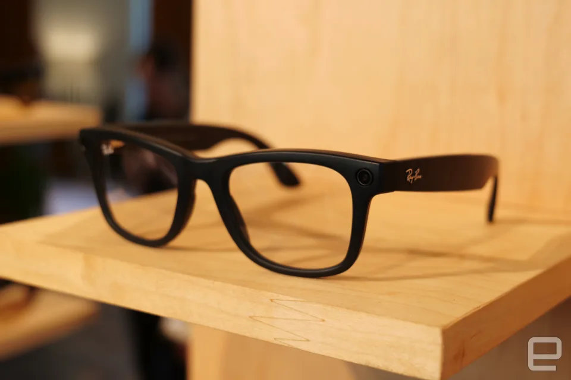

Article 2: The Ray-Ban Meta smart glasses are getting AI-powered visual search features
The Ray-Ban Meta smart glasses are getting AI-powered visual search features
Ratings: ★★★★☆
Comments: 20
The updates could go a long way toward making Meta AI feel less gimmicky and more useful, which was one of my top complaints in my initial review of the otherwise impressive smart glasses. Unfortunately, it will likely still be some time before most people with the smart glasses can access the new multimodal functionality. Bosworth said that the early access beta version will only be available in the US to a “small number of people who opt in” initially, with expanded access presumably coming sometime in 2024. Both Mark Zuckerberg shared a few videos of the new capabilities that give an idea of what may be possible. Based on the clips, it appears users will be able to engage the feature with commands that begin with “Hey Meta, look and tell me.” Zuckerberg, for example, asks Meta AI to look at a shirt he’s holding and ask for suggestions on pants that might match. He also shared screenshots showing Meta AI identifying an image of a piece of fruit and translating the text of a meme. In a video posted on Threads, Bosworth said that users would also be able to ask Meta AI about their immediate surroundings as well as more creative questions like writing captions for photos they just shot. This article originally appeared on Engadget at https://www.engadget.com/the-ray-ban-meta-smart-glasses-are-getting-ai-powered-visual-search-features-204556255.html?src=rss